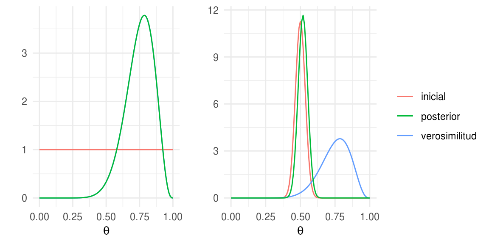

10.3 Distribuciones conjugadas
Ejemplo: Bernoulli
Comenzaremos con el modelo Beta-Binomial. Recordemos que si \(X\) en un experimento con dos posibles resultados, \(X\) se distribuye Bernoulli y la función de probabilidad esta definida por:
\[p(x|\theta)=\theta^x(1-\theta)^{1-x}\]
Ahora, si lanzamos una moneda \(N\) veces tenemos un conjunto de datos \(\{x_1,...,x_N\}\), suponemos que los lanzamientos son independientes por lo que la probabilidad de observar el conjunto de \(N\) lanzamientos es el producto de las probabilidades para cada observación:
\[p(x_1,...,x_N|\theta) = \prod_{n=1}^N p(x_n|\theta)\] \[= \theta^z(1 - \theta)^{N-z}\]
donde \(z\) denota el número de éxitos (águilas).
Ahora, en principio para describir nuestras creencias iniciales podríamos usar cualquier función de densidad con soporte en \([0, 1]\), sin embargo, sería conveniente que el producto \(p(x|\theta)p(\theta)\) (el numerador de la fórmula de Bayes) resulte en una función con la misma forma que \(p(\theta)\). Cuando este es el caso, las creencias inicial y posterior se describen con la misma distribución. Esto es conveninte pues si obtenemos nueva información podemos actualizar nuestro conocimiento de manera inmediata, conservando la forma de las distribuciones.
Cuando las funciones \(p(x|\theta)\) y \(p(\theta)\) se combinan de tal manera que la distribución posterior pertenece a la misma familia (tiene la misma forma) que la distribución inicial, entonces decimos que \(p(\theta)\) es conjugada para \(p(x|\theta)\).
Vale la pena notar que la inicial es conjugada únicamente respecto a una
función de verosimilitud particular.
Una distribución conjugada para \(p(x|\theta) = \theta^z(1 - \theta)^{N-z}\) es una \(Beta(a, b)\) \[p(\theta) = \frac {\theta^{a-1}(1-\theta)^{b-1}}{B(a,b)}\]
Para describir nuestro conocimiento inicial podemos explorar la media y desviación estándar de la distribución beta, la media es \[\bar{\theta} = a/(a+b)\] por lo que si \(a=b\) la media es \(0.5\) y conforme aumenta \(a\) en relación a \(b\) aumenta la media. La desviación estándar es
\[\sqrt{\bar{\theta}(1-\bar{\theta})/(a+b+1)}\]
Una manera de seleccionar los parámetros \(a\) y \(b\) es pensar en la proporción media de águilas (\(m\)) y el tamaño de muestra (\(n\)). Ahora, \(m=a/(a+b)\) y \(n = a+b\), obteniendo.
\[a=mn, b=(1-m)n\]
Otra manera es comenzar con la media y la desviación estándar. Al usar este enfoque debemos recordar que la desviación estándar debe tener sentido en el contexto de la densidad beta. En particular la desviación estándar típicamente es menor a \(0.289\) que corresponde a la desviación estándar de una uniforme. Entonces, para una densidad beta con media \(m\) y desviación estándar \(s\), los parámetros son: \[a=m\bigg(\frac{m(1-m)}{s^2}- 1\bigg), b=(1-m)\bigg(\frac{m(1-m)}{s^2}- 1\bigg)\]
Una vez que hemos determinado una inicial conveniente para la verosimilitud Bernoulli, veamos la posterior. Supongamos que observamos \(N\) lanzamientos de los cuales \(z\) son águilas, entonces podemos ver que la posterior es nuevamente una densidad Beta.
\[p(\theta|z)\propto \theta^{a+z-1}(1 -\theta)^{(N-z+b)-1}\]
Concluímos entonces que si la distribución inicial es \(Beta(a,b),\) la posterior es \(Beta(z+a,N-z+b).\)
Vale la pena explorar la relación entre la distribución inicial y posterior en las medias. La media incial es \[a/(a+b)\] y la media posterior es \[(z+a)/[(z+a) + (N-z+b)]=(z+a)/(N+a+b)\] podemos hacer algunas manipulaciones algebráicas para escribirla como:
\[\frac{z+a}{N+a+b}=\frac{z}{N}\frac{N}{N+a+b} + \frac{a}{a+b}\frac{a+b}{N+a+b}\]
es decir, podemos escribir la media posterior como un promedio ponderado entre la media inicial \(a/(a+b)\) y la proporción observada \(z/N\).
Ahora podemos pasar a la inferencia, comencemos con estimación de la proporción \(\theta\). La distribución posterior resume todo nuestro conocimiento del parámetro \(\theta\), en este caso podemos graficar la distribución y extraer valores numéricos como la media.
library(gridExtra)
N = 14; z = 11; a = 1; b = 1
base <- ggplot(data_frame(x = c(0, 1)), aes(x))
p1 <- base +
stat_function(fun = dbeta, args = list(shape1 = a, shape2 = b),
aes(colour = "inicial"), show.legend = FALSE) +
stat_function(fun = dbeta, args = list(shape1 = z + 1, shape2 = N - z + 1),
aes(colour = "verosimilitud"), show.legend = FALSE) +
stat_function(fun = dbeta, args = list(shape1 = a + z, shape2 = N - z + b),
aes(colour = "posterior"), show.legend = FALSE) +
labs(y = "", colour = "", x = expression(theta))
N = 14; z = 11; a = 100; b = 100
p2 <- base +
stat_function(fun = dbeta, args = list(shape1 = a, shape2 = b),
aes(colour = "inicial")) +
stat_function(fun = dbeta, args = list(shape1 = z + 1, shape2 = N - z + 1),
aes(colour = "verosimilitud")) +
stat_function(fun = dbeta, args = list(shape1 = a + z, shape2 = N - z + b),
aes(colour = "posterior")) +
labs(y = "", colour = "", x = expression(theta))
grid.arrange(p1, p2, nrow = 1, widths = c(0.38, 0.62))
knitr::include_app("https://tereom.shinyapps.io/app_bernoulli/",
height = "1000px")Una manera de resumir la distribución posterior es a través de intervalos de probabilidad, otro uso de los intervalos es establecer que valores del parámetro son creíbles.
 Calcula un intervalo del \(95\%\) de probabilidad para
cada una de las distribuciones posteriores del ejemplo.
Calcula un intervalo del \(95\%\) de probabilidad para
cada una de las distribuciones posteriores del ejemplo.
Ahora pasemos a predicción, calculamos la probabilidad de \(y =1\):
\[p(y = 1) = \int p(y=1|\theta)p(\theta|z)d\theta\] \[=\int \theta p(\theta|z,N) d\theta\] \[=(z+a)/(N+a+b)\] Esto es, la probabilidad predictiva de águila es la media de la distribución posterior sobre \(\theta\).
Finalmente, comparemos modelos. Para esto calculamos la evidencia \(p(x|M)\) para cada modelo:
\[p(x|M)=\int p(x|\theta,M)p(\theta|M)d\theta\]
en este caso los datos están dados por \(z\) y \(N\), en el caso de la incial beta es fácil calcular la evidencia:
\[p(z)=B(z+a,N-z+b)/B(a,b)\]
En nuestro ejemplo, una inicial tuiene un pico en \(0.5\) mientras que la otra es uniforme. Por otra parte, la proporción de \(1\) observados en la muestra no es cercana a \(0.5\) por lo que la inicial picuda no captura los datos muy bien.
# N = 14, z = 11, a = 1, b = 1
beta(12, 4) / beta(1, 1)
#> [1] 0.000183
# N = 14, z = 12, a = 100, b = 100
beta(126, 126) / beta(100, 100)
#> [1] 1.98e-16Supongamos que observamos una secuencia en la que la mitad de los volados resultan en águila:
# N = 14, z = 7, a = 1, b = 1
beta(8, 8) / beta(1, 1)
#> [1] 1.94e-05
# N = 14, z = 7, a = 100, b = 100
beta(107, 107) / beta(100, 100)
#> [1] 5.9e-05En general, preferimos un modelo con un valor mayor de \(p(x|\theta)\) pero la preferencia no es absoluta, una diferencia chica no nos dice mucho. Debemos considerar que los datos no son mas que una muestra aleatoria.
Supongamos que nos interesa analizar el IQ de una
muestra de estudiantes del
ITAM y suponemos que el IQ de un estudiante tiene una distribución normal
\(x \sim N(\theta, \sigma^2)\) con \(\sigma ^ 2\) conocida.
Considera que observamos el IQ de un estudiante \(x\). La verosimilitud del modelo es: \[p(x|\theta)=\frac{1}{\sqrt{2\pi\sigma^2}}exp\left(-\frac{1}{2\sigma^2}(x-\theta)^2\right)\]
Realizaremos un análisis bayesiano por lo que hace falta establer una distribución inicial, elegimos \(p(\theta)\) que se distribuya \(N(\mu, \tau^2)\) donde elegimos los parámetros \(\mu, \tau\) que mejor describan nuestras creencias iniciales.
Calcula la distribución posterior \(p(\theta|x) \propto p(x|\theta)p(\theta)\), usando la inicial y verosimilitud que definimos arriba. Una vez que realices la multiplicación debes identificar el núcleo de una distribución Normal, ¿cuáles son sus parámetros (media y varianza)?